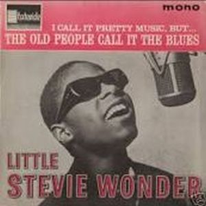
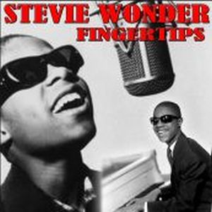

Stevie Wonder debutó con The Jazzsoul Of Stevie Wonder a la edad de 11 años. Fue un inicio increible donde demostró sus habilidades tocando los drums, bongos, armónica y teclados. Tambien demostró sus habilidades como compositor en algunos temas.
Disco integramente instrumental empleando unos sonidos jazz adelantados para su época. Berry Gordy le renombró como Little Stevie, e igualmente decidió que mostrara la faceta instrumentista del pequeño Stevie, en espera de la madured vocal -todavía era infantil- de este niño prodigio. Contó con la producción del tambien compositor para la Motown, Clarence Paul, productor en los primeros años de los Temptations y co-compositor de algunos de los éxitos de Stevie Wonder y de otros grandes como Marvin Gaye.
 